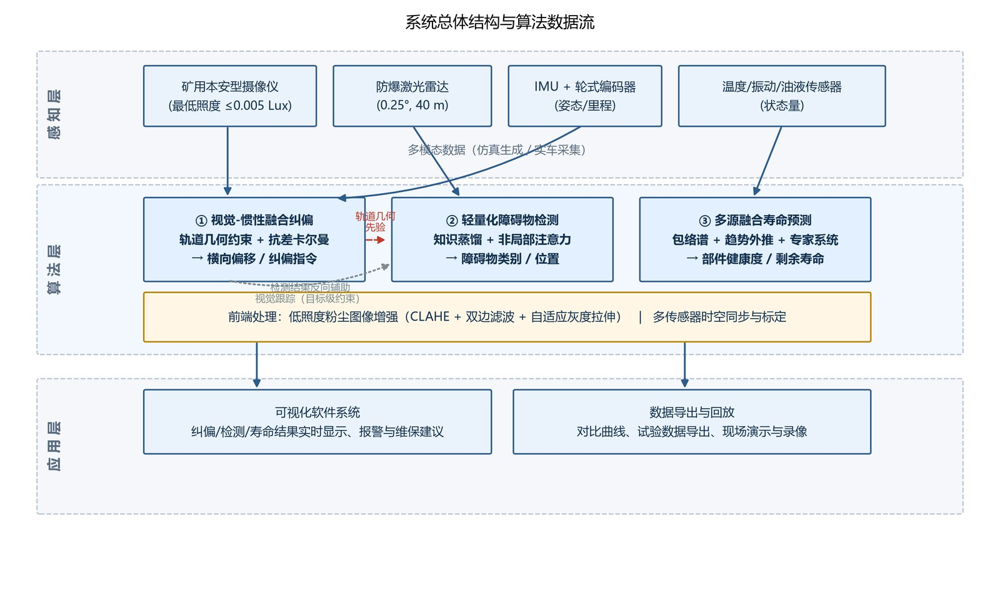
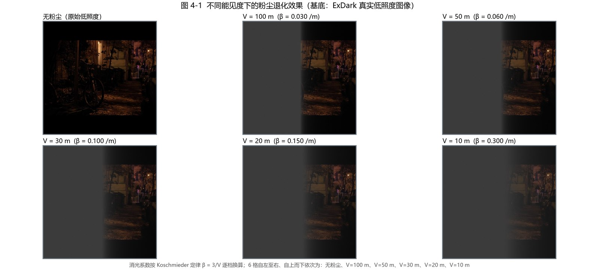
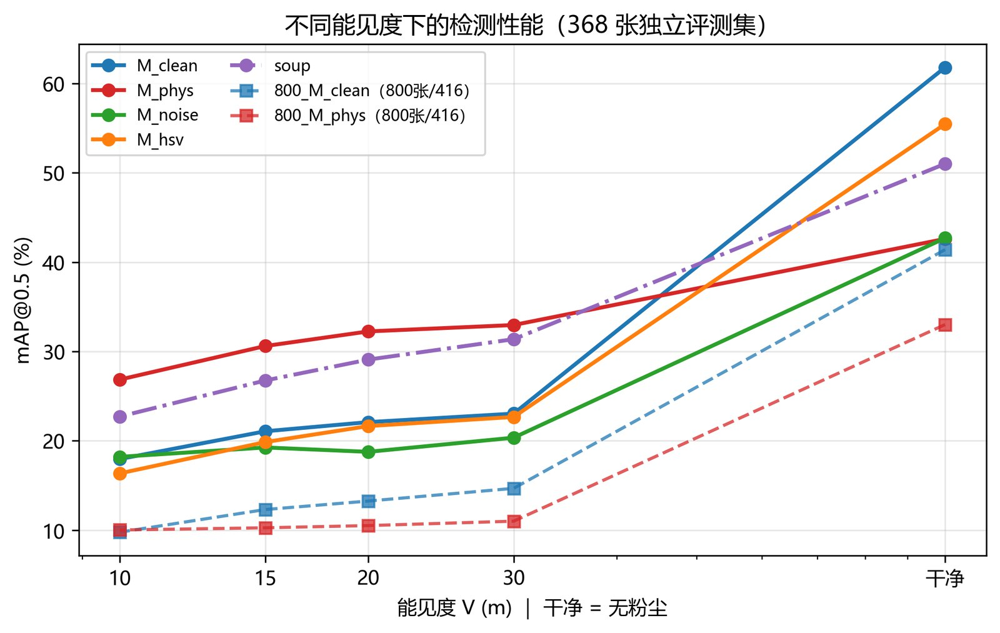
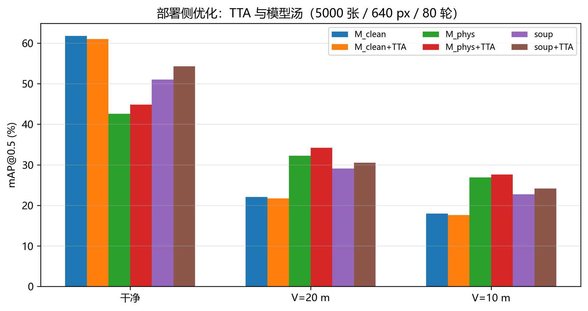
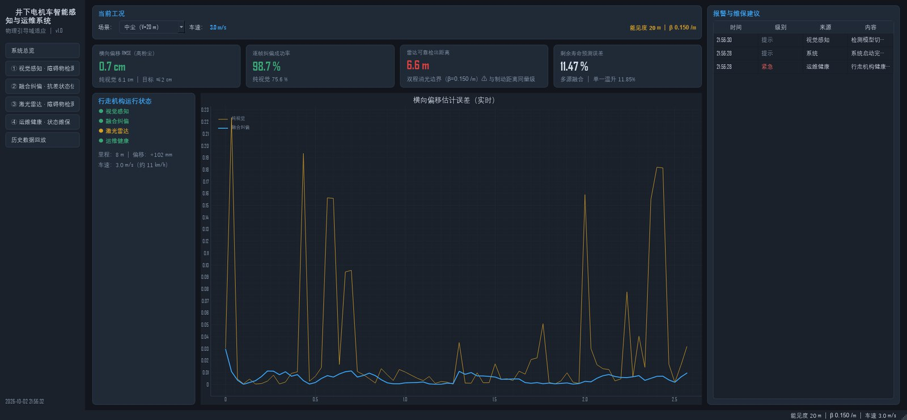
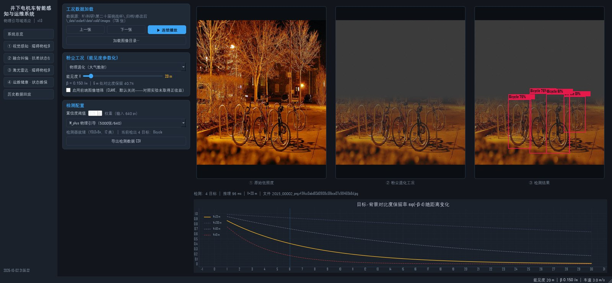
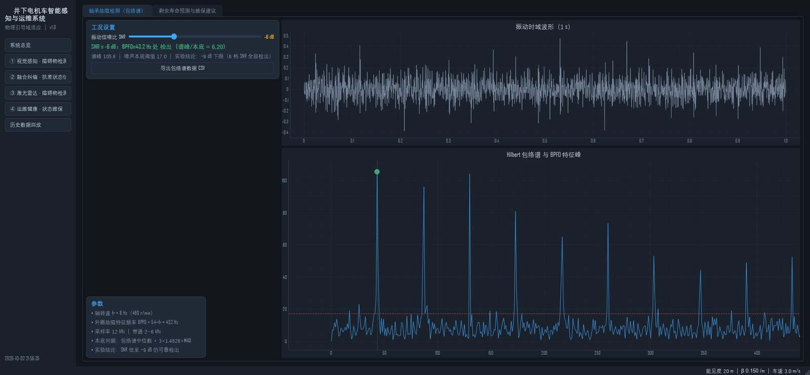

Physical boundary
At V=30 m, contrast at 10 m falls to 36.8%; at V=20 m, 6 m falls to 40.7%. A single-line LiDAR has a geometric ceiling of 6.5 m — the same order as braking distance.
Challenge Cup · Technology Invention B · 2026
基于物理引导域适应的井下电机车智能感知与运维系统
All dust conditions are synthetically degraded from ExDark (CC BY 4.0). This is a method/protocol study, not a mine-field accuracy claim.

01 · Overview
At V=30 m, contrast at 10 m falls to 36.8%; at V=20 m, 6 m falls to 40.7%. A single-line LiDAR has a geometric ceiling of 6.5 m — the same order as braking distance.
No labeled mine data. We synthesize dust with the atmospheric scattering model I = J·t + A(1−t), t = exp(−βd), β = 3/V, using a monocular ground-plane depth map.
We found and fixed a leakage bug: the original validation set and dust evaluation set were generated from the same split and seed. After correction, the original +3.89 pp gain did not reproduce (0/8 comparisons).
02 · Method
Instead of an abstract extinction coefficient, we parameterize dust by visibility V, a quantity a mine can measure and write into operating rules. The Koschmieder relation gives β = 3/V; per-pixel depth from a ground-plane projection gives a depth-structured transmission map.
The same model generates three training conditions and three evaluation sets with disjoint seeds: calibration (368 images), clean evaluation (368), and dust V=20/V=10 (368 each). This “three-way split” is the core of the corrected protocol.
Four models share everything except the offline degradation of the training set: M_clean, M_phys, M_noise (global gray aligned, no depth structure), and M_hsv (photometric only).
R = ln(1/Ithr)/(2β), Ithr=0.14. Single-line, double-pass extinction.

03 · Results
| Evaluation | M_clean | M_phys | M_noise | M_hsv | Δ phys−clean |
|---|---|---|---|---|---|
| Clean | 61.81 | 42.61 | 42.70 | 55.46 | −19.20 |
| V=30 m | 23.04 | 32.96 | 20.35 | 22.67 | +9.92 |
| V=20 m | 22.09 | 32.24 | 18.76 | 21.65 | +10.15 |
| V=15 m | 21.06 | 30.61 | 19.25 | 19.86 | +9.55 |
| V=10 m | 17.96 | 26.85 | 18.20 | 16.35 | +8.89 |


M_noise) and a photometric-only augmentation (M_hsv) do not gain. The depth-structured scattering is the active ingredient.
04 · Demo



PySide6 · 30 Hz fusion · model switch (M_clean / M_phys) · TTA toggle · CSV export · history replay.
05 · Reproduce
git clone https://github.com/<your-org>/mine-loco-perception.git
cd mine-loco-perception
pip install -e ".[full]"
# ExDark (CC BY 4.0) → data/exdark/data
python scripts/download_exdark.py
# Unit tests (18)
pytest -q
# System demo
python -m mine_loco_system.main
# Simulation reproduction (E2/E3/E4)
python scripts/rerun_e2_offset.py
python scripts/rerun_e3_lidar.py
python scripts/rerun_e4_lifetime.py
python scripts/sensitivity_check.py
python scripts/redraw_figs.py
# Extended evaluation (V=30/15, TTA, model soup)
python scripts/eval_extension.pyTrained checkpoints are not committed. Place yolov8n.pt in weights/, or train with scripts/exp_scaleup_ablation.py; the system searches for checkpoints in weights/ and outputs/results/.
06 · Citation
@software{mine_loco_perception_2026,
title = {Mine-Loco Perception: Physics-Guided Domain Adaptation for
Underground Mine Locomotive Perception and Maintenance},
author = {Li, Kerui and Wang, Zhiwen and Yang, Moran and Jin, Zikuan and
Qi, Gaoyang and Xia, Yuhan and Liu, Yixuan},
year = {2026},
url = {https://github.com/<your-org>/mine-loco-perception}
}